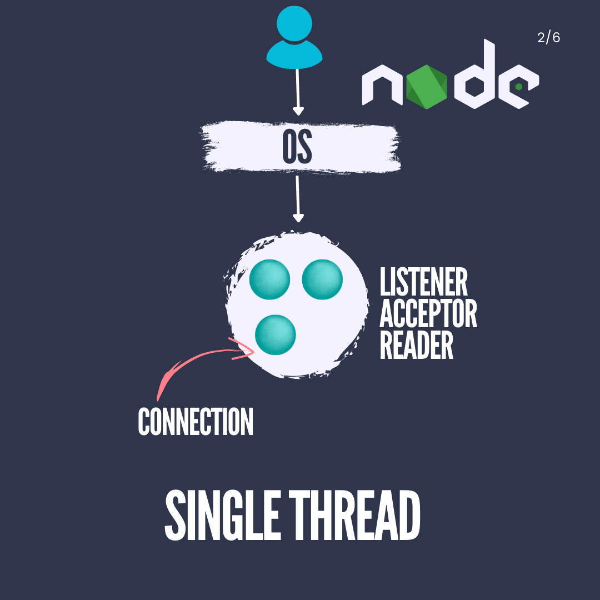
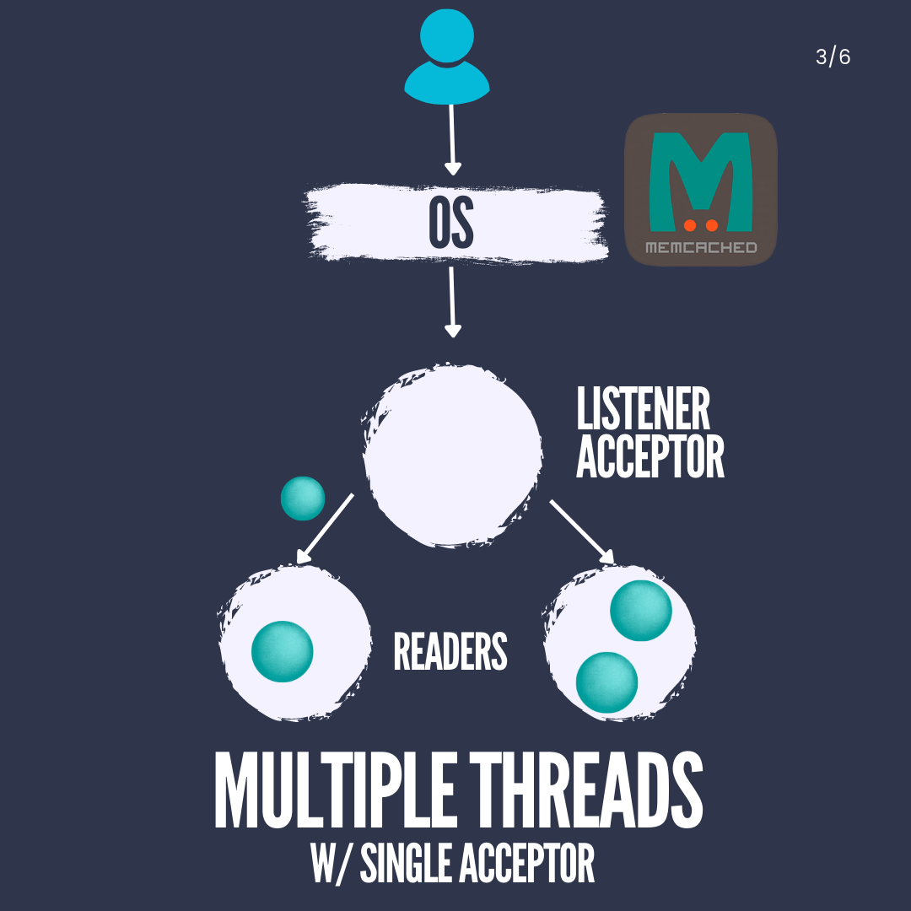
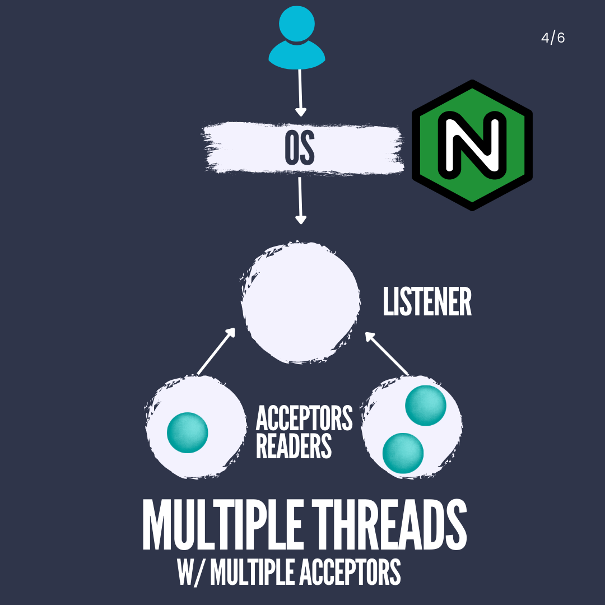
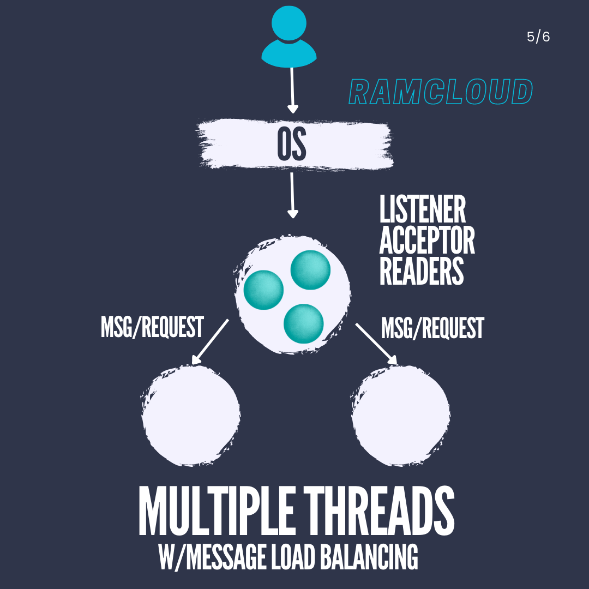
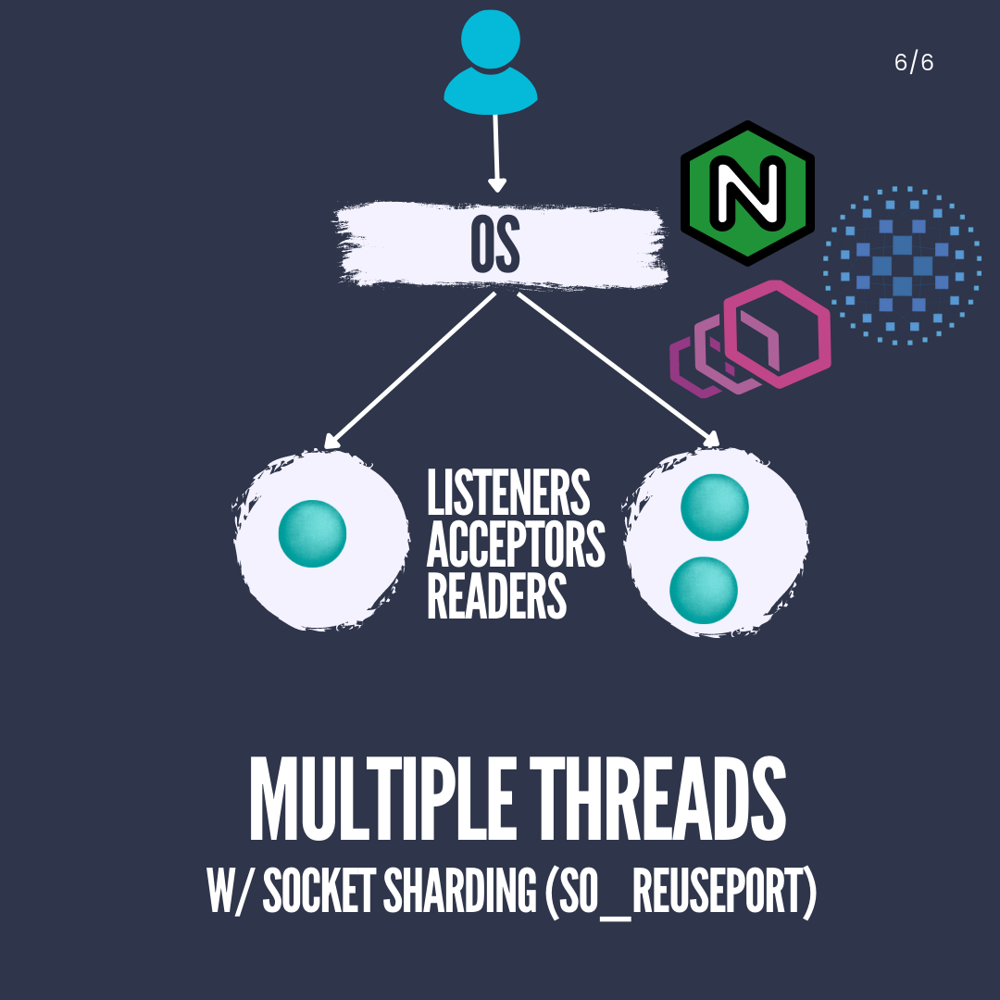

In networked backend applications employing TCP as the transport
protocol, a variety of essential elements come into play:
Fundamental Components:
Communication Protocol:
Definition: TCP (Transmission Control Protocol) is a
frequently chosen protocol for its dependable, connection-oriented
communication.
Port to Bind to:
Definition: The backend application binds to a specific IP
address and port, enabling it to listen for incoming connections.
Process to Serve Requests and Produce
Responses:
Definition: The backend process is responsible for
accepting incoming connections, reading data from them, processing the
data to comprehend requests, and delivering suitable responses.
When dealing with TCP, the establishment of a stateful connection
between the client and the backend is crucial. Before this connection
can be established, the backend must actively accept incoming
connections, as connections left unaccepted can accumulate in the
operating system’s backlog buffer.
Key Roles and Definitions:
Listener:
Definition: The listener is a component within the backend
application that assumes the responsibility of generating a socket and
actively listening on a specific IP address and port. It waits for
incoming connection requests from clients.
Analogy: Think of it as an electrical wall socket into
which devices (connections) can be plugged.
Acceptor:
Definition: The acceptor is either a thread or a process
within the backend application that manages the task of accepting
incoming connections. When a connection request arrives, the acceptor
takes charge of the process.
Function: Its role encompasses calling the operating
system’s “accept” function to accept connections on behalf of the
application.
Reader (or Worker):
Definition: The reader, often referred to as a worker,
serves as a component responsible for reading data from an established
connection. It processes the raw byte stream received over the TCP
connection.
Function: It takes the file descriptor representing the
connection and reads the data from the OS buffer, converting it into
meaningful requests or messages for the application layer.
TCP Stream:
Definition: A TCP stream denotes the continuous flow of raw
bytes transmitted between a client and a server over a TCP connection.
It constitutes a sequence of data without clear boundaries or
structure.
Characteristics: TCP, as a streaming protocol, does not
define message boundaries or structure; instead, it delivers an
uninterrupted stream of bytes.
Requests (in the context of TCP):
Definition: Requests, in this context, signify meaningful
data or messages constructed from the raw TCP stream. This process
involves parsing the stream to identify the commencement and conclusion
of individual requests.
Challenge: Parsing raw bytes into requests can be
intricate, especially in Layer 7 protocols like HTTP, HTTP/2, gRPC, and
SSH, where messages possess distinct formats.
Architectural Patterns:
The management of these connections entails various architectural
patterns, each revolving around the handling of threads and
connections:
Single Threaded Architecture:
Description: This is a straightforward approach where the
backend application operates on a single thread.
Functionality: This single thread performs tasks such as
listening for incoming connections, accepting them, and reading data
from these connections.
Usage: It is commonly employed in environments like
Node.js, which achieves scalability by running multiple instances of
this single-threaded application.

Single Threaded
Multiple Threads Single Acceptor
Architecture:
Description: This architecture leverages multithreading to
harness the power of multiple CPU cores.
Operation: There is still a single thread responsible for
listening and accepting connections.
Handling Connections: Each accepted connection is delegated
to a separate thread, which manages the reading and processing of
data.
Considerations: It’s imperative to exercise caution to
prevent excessive memory consumption due to thread creation and context
switching.
Example: This approach mirrors the one used by
memcached.

Multiple Threads Single
Acceptor
Multiple Threads Multiple Acceptors
Architecture:
Description: This architecture bears similarities to the
previous one but introduces a slight variation.
Socket Placement: The socket resides in shared memory
accessible by multiple threads.
Operation: The listener thread spawns worker threads that
independently call the accept function on the shared socket.
Challenges: Despite being an improvement over the single
acceptor model, it may still encounter contention and blocking due to
mutex usage.

Multiple Thread Multiple
Acceptor
Multiple Threads with Message-based Load Balancing
Architecture:
Description: This architecture draws inspiration from
protocols like Homa and finds use in systems like RAMCloud.
Operation: The listener thread focuses on accepting,
reading, and parsing logical messages (requests) rather than raw
connections.
Load Balancing: Parsed messages are subsequently
distributed to worker threads for processing, facilitating load
balancing.
Considerations: The listener thread might become a
potential bottleneck as it juggles both connections and message
parsing.

Multiple Threads with Message-based Load
Balancing
Multiple Threads with Socket Sharding
(SO_REUSEPORT):
Description: This approach circumvents the constraint of a
single process binding to a port.
Usage: Multiple processes can listen on the same port by
employing the SO_REUSEPORT socket option.
Connection Handling: Connections are allocated to these
processes, and accept calls are no longer serialized.
Adoption: NGINX, Envoy, and HAProxy have embraced this
approach.

Multiple Threads with Socket
Sharding
It’s crucial to recognize that these architectural patterns can be
combined creatively to align with specific application requirements. For
example, the fusion of socket sharding with message-based load balancing
could yield enhanced performance and load distribution. Each pattern
boasts its own merits and trade-offs, and the selection hinges on
factors such as scalability demands, latency considerations, and the
availability of hardware resources.